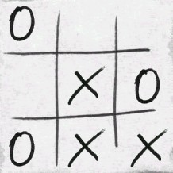

Problem A: Tic Tac Toe

The game of Tic Tac Toe is played on an n-by-n grid (where
n is usually but not necessarily three). Two players alternate
placing symbols on squares of the grid. One player places Xes and the
other player places Os. The player placing Xes always goes first. When
the grid contains a vertical, horizontal, or diagonal sequence of at
least m consecutive squares all containing the same symbol, the game
ends and the winner is the player who placed the last symbol.
When all the squares of the grid are filled, if neither player has
won, the game ends in a draw.
Your task is to analyze the state of a Tic Tac Toe board, and determine
whether the game is still in progress, or if it has completed, who won,
or if the game ended in a draw. You should also detect erroneous states
of the Tic Tac Toe board that could never occur during an actual game.
Input Specification
The first line of input contains a single integer, the number of test cases to follow.
The first line of each test case contains the two integers
n and m, separated by spaces, with
1 <= m <= n <= 1000.
The following n lines of the test case each contain one row of the
Tic Tac Toe board. Each of these lines contains exactly n
characters, and each of these characters is either an X,
an O, or a period (.), indicating an empty square.
Sample Input
1
3 3
..X
OOX
..X
Output Specification
For each test case, output a single line containing the appropriate string
X WINS, O WINS, or DRAW if the game is over,
the string IN PROGRESS if the game has not yet
finished, or ERROR if the state of the
board could never occur during a game.
Output for Sample Input
X WINS
Ondřej Lhoták, Malcolm Sharpe